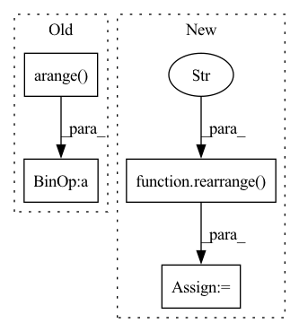

Pattern ID :4053
Before Change
sim = einsum("b i d, b j d -> b i j", q, k)
if self.causal:
sim = sim / rearrange(torch.arange( seq_len, device = device) + 1, "... -> ... 1")
else:
sim = sim / seq_len
After Change
attn = self.dropout(attn)
if exists(mask):
mask = rearrange( mask, "b j -> b 1 j" )
attn = attn.masked_fill(~mask, 0.)
if self.causal:
causal_mask = torch.ones((seq_len, seq_len), dtype = torch.bool, device = device).triu(1)In pattern: SUPERPATTERN
Frequency: 3
Non-data size: 4
Instances Fragment ID: 15087334
Project Name: lucidrains/flash-pytorch
Commit Name: 6b0cc2e2316bf9c93b8b48916a11f774209d7bf1
Time: 2022-03-28
Author: lucidrains@gmail.com
File Name: flash_pytorch/flash_pytorch.py
M Class Name: GAU
N Class Name: GAU
M Method Name: forward(4)
N Method Name: forward(3)
M Parent Class: nn.Module
N Parent Class: nn.Module
M File Name: flash_pytorch/flash_pytorch.py
N File Name: flash_pytorch/flash_pytorch.py
M Start Line: 171
M End Line: 178
N Start Line: 162
N End Line: 184
Before Change
* bool: whether to return as array of idxs or boolean values
Outputs: (N_mask, CA_mask)
lengths = torch.arange( scn_seq.shape[-1]*l_aa)
// repeat if needed:
if len(lengths.shape) == 2:
lengths = repeat(lengths, "l -> b l", b=scn_seq.shape[0])
// N is the first atom in every AA. CA is the 2nd.
N_mask = lengths%l_aa == 0
CA_mask = lengths% l_aa == 1
if boolean:
return N_mask, CA_mask
return N_mask.nonzero(), CA_mask.nonzero()After Change
wrapper[:, 0] = 1
wrapper[:, 1] = 2
wrapper[:, 2] = 3
wrapper = rearrange( wrapper, "... l c -> ... (l c)" )
// find idxs
N_mask = wrapper == 1
CA_mask = wrapper == 2
C_mask = wrapper == 3
if boolean: Fragment ID: 15087335
Project Name: lucidrains/alphafold2
Commit Name: 1e5f99521575995589d1fbe94d2bd693f7e274c9
Time: 2021-03-03
Author: ericalcaide1@gmail.com
File Name: alphafold2_pytorch/utils.py
M Class Name: AnonimousClass
N Class Name: AnonimousClass
M Method Name: scn_backbone_mask(3)
N Method Name: scn_backbone_mask(3)
M Parent Class:
N Parent Class:
M File Name: alphafold2_pytorch/utils.py
N File Name: alphafold2_pytorch/utils.py
M Start Line: 189
M End Line: 198
N Start Line: 189
N End Line: 201
Before Change
// add dynamic positional bias
i_pos = torch.arange(wsz, device = device)
j_pos = torch.arange( wsz, device = device)
grid = torch.stack(torch.meshgrid(i_pos, j_pos))
grid = rearrange(grid, "c i j -> (i j) c")
rel_ij = grid[:, None] - grid[None, :]
rel_pos_bias = self.dpb(rel_ij.float())
sim = sim + rel_pos_biasAfter Change
pos = torch.arange(-wsz, wsz + 1, device = device)
rel_pos = torch.stack(torch.meshgrid(pos, pos))
rel_pos = rearrange( rel_pos, "c i j -> (i j) c" )
biases = self.dpb(rel_pos.float())
rel_pos_bias = biases[self.rel_pos_indices]
sim = sim + rel_pos_bias Fragment ID: 15087368
Project Name: lucidrains/vit-pytorch
Commit Name: b69b5af34f7759948425113f6dc3b30dfb91d4d1
Time: 2021-11-22
Author: lucidrains@gmail.com
File Name: vit_pytorch/crossformer.py
M Class Name: Attention
N Class Name: Attention
M Method Name: forward(2)
N Method Name: forward(2)
M Parent Class: nn.Module
N Parent Class: nn.Module
M File Name: vit_pytorch/crossformer.py
N File Name: vit_pytorch/crossformer.py
M Start Line: 139
M End Line: 144
N Start Line: 152
N End Line: 156